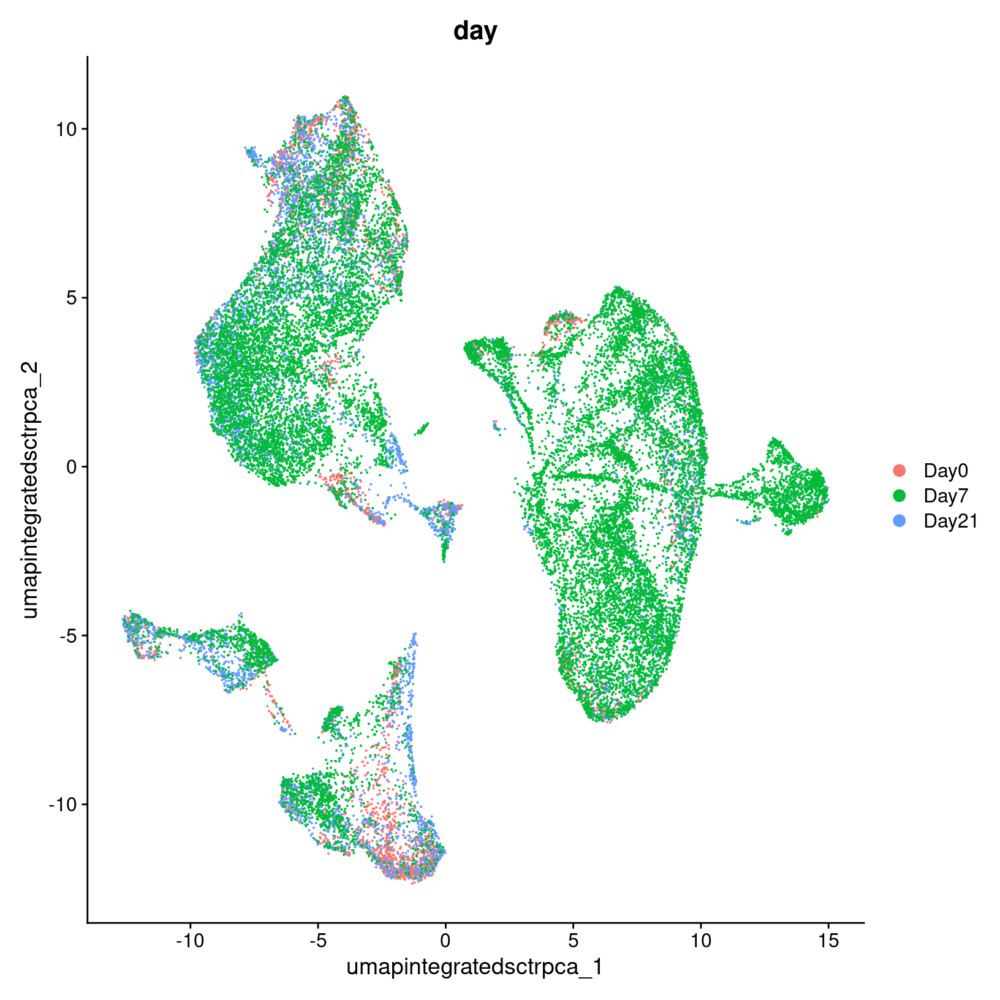
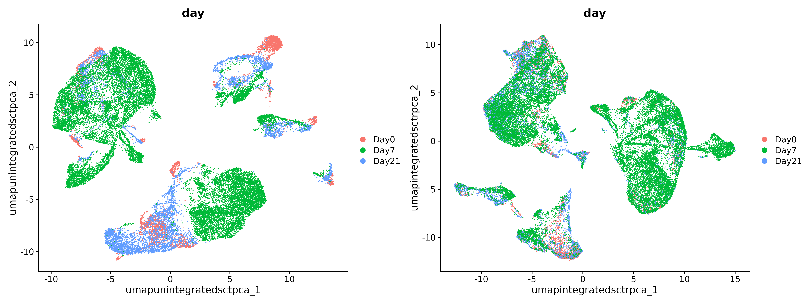

Workflow Overview

Introduction
One of our goals in a single-cell analysis is to generate clusters
that reasonably approximate cell-types or sub-types of interest in our
samples before determining if there are differences in the proportions
of these populations or differences in gene expression within these
populations between experimental conditions.
In this section, we will demonstrate how to generate clusters using
Seurat’s graph based clustering approach and visualize those clustering
assignments via a lower-dimensional projection of the full dataset.
Like other steps in our analysis, multiple parameters may need to be
tested and evaluated while we would expect that only the final would be
reported. Clustering is considered part of data exploration so an
iterative approach is reasonable, and often expected (source).
Objectives
- Understand the clustering process and input parameters
- Generate initial clusters and visualize the results
Clustering and projection
An important aspect of parameter selection for clustering is to
understand the “resolution” of the underlying biology and your
experimental design. Is answering your biological question dependent on
identifying rarer cell types or specific subtypes? Or are broader
cell-types more relevant to address your biological question?
The OSCA book has a helpful
analogy comparing clustering to microscopy and points out that
“asking for an unqualified ‘best’ clustering is akin to asking for the
best magnification on a microscope without any context”.
We’ve already selected a number of PCs that we think are likely to
represent biological variation in our data while excluding technical
variability. Next, we’ll need to determine the “community” of cells
based on the selected PCs before selecting a resolution to divide those
communities into discrete clusters.
Clustering
Seurat uses a graph-based clustering approach to assign cells to
clusters using a distance metric based on the previously generated PCs,
with improvements based on work by (Xu
and Su 2015) and CyTOF data (Levine et
al. 2015) implemented in Seurat v3 and v5 and building on the
initial strategies for droplet-based single-cell technology (Macosko et
al. 2015) (source).
A key aspect of this process is that while the clusters are based on
similarity of expression between the cells, the clustering is based on
the selected PCs and therefore limited to the genes contributing to
those PCs.

Image: kNN example - section on graph based
clustering (from Cambridge Bioinformatics course)
To briefly summarize, cells are embedded in a k-nearest neighbors
(kNN) graph (illustrated above) based on “the euclidean distance in PCA
space” between the cells and the edge weights between any two cells
(e.g. their “closeness”) is refined based on Jaccard similarity (source).
Additional context and sources for graph-based clustering
Cambridge
Bioinformatics’ Analysis of single cell RNA-seq data course
materials, the source of the image above, delves into kNN and other
graph based clustering methods in much greater detail, including
outlining possible downsides for these methods. To described kNN, we
have also drawn from the Ho
Lab’s description of this process for Seurat v3 as well as the HBC
materials on clustering and the OSCA
book’s more general overview of graph based clustering, which also
describes the drawbacks for these methods.
This process is performed with the FindNeighbors() command,
using the number of principal components we selected in the previous
section.
geo_so = FindNeighbors(geo_so, dims = 1:pcs, reduction = 'integrated.sct.rpca')
The second step is to iteratively partition the kNN graph into
“cliques” or clusters using the Louvain modularity optimization
algorithm (for the default parameters), with the “granularity” of the
clusters set by a resolution parameter (source).

Image: K-means clustering example (from
Cambridge Bioinformatics course)
We’ll use the FindClusters() function,
selecting a resolution of 0.4 to start, although we could
also add other resolutions at this stage to look at in later steps. See
Waltman
and Jan van Eck (2013) for the underlying algorithms.
Again, how a “cell type” or “subtype” should be defined for your data
is helpful to consider in selecting a resolution - we’d start with a
higher resolution for smaller/more rare clusters and a lower resolution
for larger/more general clusters.
And then iff we look at the meta data we can see that cluster labels
have now been added for each cell:
# generate clusters
geo_so = FindClusters(geo_so, resolution = 0.4, cluster.name = 'integrated.sct.rpca.clusters')
Modularity Optimizer version 1.3.0 by Ludo Waltman and Nees Jan van Eck
Number of nodes: 29615
Number of edges: 978654
Running Louvain algorithm...
Maximum modularity in 10 random starts: 0.9396
Number of communities: 20
Elapsed time: 4 seconds
# look at meta.data to see cluster labels
head(geo_so@meta.data)
orig.ident nCount_RNA nFeature_RNA
HODay0replicate1_AAACCTGAGAGAACAG-1 HO.Day0.replicate1 10234 3226
HODay0replicate1_AAACCTGGTCATGCAT-1 HO.Day0.replicate1 3158 1499
HODay0replicate1_AAACCTGTCAGAGCTT-1 HO.Day0.replicate1 13464 4102
HODay0replicate1_AAACGGGAGGCCCGTT-1 HO.Day0.replicate1 1189 629
HODay0replicate1_AAACGGGCAACTGGCC-1 HO.Day0.replicate1 7726 2602
HODay0replicate1_AAACGGGGTCCGAATT-1 HO.Day0.replicate1 5165 2362
day replicate percent.mt nCount_SCT
HODay0replicate1_AAACCTGAGAGAACAG-1 Day0 replicate1 1.240962 6061
HODay0replicate1_AAACCTGGTCATGCAT-1 Day0 replicate1 7.536415 4625
HODay0replicate1_AAACCTGTCAGAGCTT-1 Day0 replicate1 3.112002 5426
HODay0replicate1_AAACGGGAGGCCCGTT-1 Day0 replicate1 3.700589 4165
HODay0replicate1_AAACGGGCAACTGGCC-1 Day0 replicate1 2.938131 5858
HODay0replicate1_AAACGGGGTCCGAATT-1 Day0 replicate1 9.196515 5162
nFeature_SCT integrated.sct.rpca.clusters
HODay0replicate1_AAACCTGAGAGAACAG-1 2865 2
HODay0replicate1_AAACCTGGTCATGCAT-1 1510 2
HODay0replicate1_AAACCTGTCAGAGCTT-1 2485 3
HODay0replicate1_AAACGGGAGGCCCGTT-1 919 2
HODay0replicate1_AAACGGGCAACTGGCC-1 2585 2
HODay0replicate1_AAACGGGGTCCGAATT-1 2348 8
seurat_clusters
HODay0replicate1_AAACCTGAGAGAACAG-1 2
HODay0replicate1_AAACCTGGTCATGCAT-1 2
HODay0replicate1_AAACCTGTCAGAGCTT-1 3
HODay0replicate1_AAACGGGAGGCCCGTT-1 2
HODay0replicate1_AAACGGGCAACTGGCC-1 2
HODay0replicate1_AAACGGGGTCCGAATT-1 8
Generally it’s preferable to err on the side of too many clusters, as
they can be combined manually in later steps. In our experience, this is
another parameter that may need to be iteratively revised and
reviewed.
Resolution parameter recommendations
The Seurat
clustering tutorial recommends selecting a resolution between 0.4 -
1.2 for datasets of approximately 3k cells, while the HBC
course recommends 0.4-1.4 for 3k-5k cells. However, in our
experience reasonable starting resolutions can be very dataset
dependent.
Cluster plots
To visualize the cell clusters, we can use dimensionality reduction
techniques to visualize and explore our large, high-dimensional dataset.
Two popular methods that are supported by Seurat are t-distributed
stochastic neighbor embedding (t-SNE) and Uniform Manifold Approximation
and Projection (UMAP) techniques. These techniques allow us to visualize
our high-dimensional single-cell data in 2D space and see if cells
grouped together within graph-based clusters co-localize in these
representations (source).
While we unfortunately don’t have time to compare and contrast tSNE,
and UMAP, we would highly recommend this blog post
contrasting tSNE and UMAP for illustrative examples. The Seurat
authors additionally caution that while these methods are useful for
data exploration, to avoid drawing biological conclusions solely based
on these visualizations (source).
To start this process, we’ll use the RunUMAP() function to
calculate the UMAP reduction for our data. Notice how the previous
dimensionality choices carry through the downstream analysis and that
the number of PCs selected in the previous steps are included as an
argument.
geo_so = RunUMAP(geo_so, dims = 1:pcs, reduction = 'integrated.sct.rpca', reduction.name = 'umap.integrated.sct.rpca')
geo_so
An object of class Seurat
47037 features across 29615 samples within 2 assays
Active assay: SCT (20548 features, 3000 variable features)
3 layers present: counts, data, scale.data
1 other assay present: RNA
3 dimensional reductions calculated: unintegrated.sct.pca, integrated.sct.rpca, umap.integrated.sct.rpca
Notice that we now have a third reduction:
umap.integrated.sct.rpca.
Visualizing and evaluating clustering
After we generate the UMAP reduction, we can then visualize the
results using the DimPlot() function,
labeling our plot by the auto generated seurat_clusters
that correspond to the most recent clustering results generated.
At this stage, we want to determine if the clusters look fairly well
separated, if they seem to correspond to how cells are grouped in the
UMAP, and if the number of clusters are aligned with the resolution of
our biological question.
We can also look at the same UMAP labeled by day to
visually inspect if the UMAP structure corresponds to the
day.
# UMAP with cluster ID labels
post_integration_umap_plot_clusters = DimPlot(geo_so, group.by = 'seurat_clusters', label = TRUE, reduction = 'umap.integrated.sct.rpca') + NoLegend()
post_integration_umap_plot_clusters

ggsave(filename = 'results/figures/umap_integrated_sct_clusters.png', plot = post_integration_umap_plot_clusters, width = 6, height = 6, units = 'in')
# UMAP with day labels (note - we added this column to the meta-data yesterday)
post_integration_umap_plot_day = DimPlot(geo_so, group.by = 'day', label = FALSE, reduction = 'umap.integrated.sct.rpca')
post_integration_umap_plot_day

ggsave(filename = 'results/figures/umap_integrated_sct_day.png', plot = post_integration_umap_plot_day, width = 8, height = 6, units = 'in')
A plot like this can tell us if technical sources of variation might
be driving or stratifying the clusters, or if we see good correction
after the normalization and integration steps.
Another approach is to evaluate the number of cells per cluster using
the table() function, split by day or split by
orig.ident to see if the individual samples are driving any
of the UMAP structure:
# table of number of cells per cluster, split by condition
table(geo_so@meta.data$day, geo_so@meta.data$integrated.sct.rpca.clusters)
0 1 2 3 4 5 6 7 8 9 10 11 12 13
Day0 65 240 843 317 167 36 36 125 778 132 125 305 55 29
Day7 3184 2497 972 1689 2037 2374 1596 929 108 548 566 382 627 686
Day21 1329 355 964 663 461 147 81 452 383 499 379 227 108 72
14 15 16 17 18 19
Day0 159 133 56 141 37 19
Day7 309 97 262 86 14 36
Day21 42 252 117 195 80 12
# table of number of cells per cluster per sample
table(geo_so@meta.data$orig.ident, geo_so@meta.data$integrated.sct.rpca.clusters)
0 1 2 3 4 5 6 7 8 9 10
HO.Day0.replicate1 14 82 250 96 52 17 15 24 203 33 32
HO.Day0.replicate2 10 38 110 33 33 4 6 34 152 27 20
HO.Day0.replicate3 25 72 300 117 46 3 5 25 227 40 42
HO.Day0.replicate4 16 48 183 71 36 12 10 42 196 32 31
HO.Day7.replicate1 410 587 285 431 506 766 755 157 45 113 190
HO.Day7.replicate2 1156 616 184 361 580 468 220 372 7 158 135
HO.Day7.replicate3 887 722 377 592 534 395 90 241 48 178 146
HO.Day7.replicate4 731 572 126 305 417 745 531 159 8 99 95
HO.Day21.replicate1 338 96 317 221 144 40 30 139 115 145 110
HO.Day21.replicate2 168 69 189 86 82 25 12 106 113 78 48
HO.Day21.replicate3 184 72 168 93 91 26 8 62 100 90 69
HO.Day21.replicate4 639 118 290 263 144 56 31 145 55 186 152
11 12 13 14 15 16 17 18 19
HO.Day0.replicate1 84 17 11 47 20 5 35 5 7
HO.Day0.replicate2 57 8 6 13 25 13 16 9 1
HO.Day0.replicate3 86 16 5 58 40 16 54 12 2
HO.Day0.replicate4 78 14 7 41 48 22 36 11 9
HO.Day7.replicate1 79 167 213 63 40 72 28 4 17
HO.Day7.replicate2 126 180 160 86 19 88 12 1 3
HO.Day7.replicate3 110 163 164 93 27 72 36 8 14
HO.Day7.replicate4 67 117 149 67 11 30 10 1 2
HO.Day21.replicate1 73 35 14 13 65 26 56 20 3
HO.Day21.replicate2 40 15 14 6 51 29 29 17 5
HO.Day21.replicate3 34 16 20 7 55 20 39 9 3
HO.Day21.replicate4 80 42 24 16 81 42 71 34 1
Comparing to unintegrated data
If we had proceeded with our filtered data and only normalized our
data without doing any integration, including through the dimensionality
reduction and clustering steps and then labeled the cells with their
sample of origin, then we would see the following for our data:

In the plot at left, we see that while there are distinct clusters,
those clusters seem to stratified by day. This suggests that without
integration, these batch effects could skew the biological variability
in our data. While on the right, the days are more mixed.
Rewind: Pre-integration evaluation clustering and visualization
(code)
Prior to integration, we could follow the same steps we’ve just run
for the integrated to see if the resulting clusters tend to be
determined by sample or condition (in this case, the day):
geo_so = FindNeighbors(geo_so, dims = 1:pcs, assay = 'RNA', reduction = 'unintegrated.sct.pca', graph.name = c('RNA_nn', 'RNA_snn'))
geo_so = FindClusters(geo_so, resolution = 0.4, graph.name = 'RNA_snn', cluster.name = 'unintegrated.sct.clusters')
geo_so = RunUMAP(geo_so, dims = 1:pcs, reduction = 'unintegrated.sct.pca', reduction.name = 'umap.unintegrated.sct.pca')
The plots above were generated with:
pre_integration_umap_plot_orig.ident = DimPlot(geo_so, group.by = 'orig.ident', label = FALSE, reduction = 'umap.unintegrated.sct.pca')
ggsave(filename = 'results/figures/umap_unintegrated_sct_orig.ident.png', plot = pre_integration_umap_plot_orig.ident, width = 8, height = 6, units = 'in')
pre_integration_umap_plot_day = DimPlot(geo_so, group.by = 'day', label = FALSE, reduction = 'umap.unintegrated.sct.pca')
ggsave(filename = 'results/figures/umap_unintegrated_sct_day.png', plot = pre_integration_umap_plot_day, width = 8, height = 6, units = 'in')
Alternative clustering resolutions
While we show a single resolution, we can generate and plot multiple
resolutions iteratively and compare between them before selecting a
clustering result for the next steps:
resolutions = c(0.4, 0.8)
for(res in resolutions) {
message(res)
cluster_column = sprintf('SCT_snn_res.%s', res)
umap_file = sprintf('results/figures/umap_integrated_sct_%s.png', res)
geo_so = FindClusters(geo_so, resolution = res)
DimPlot(geo_so, group.by = cluster_column, label = TRUE, reduction = 'umap.integrated.sct.rpca') + NoLegend()
ggsave(filename = umap_file, width = 8, height = 7, units = 'in')
}
In the results, we’ll see multiple resolutions should now be added to
the metadata slot.
head(geo_so@meta.data)
Save our progress
Before moving on to our next section, we will output our updated
Seurat object to file:
saveRDS(geo_so, file = 'results/rdata/geo_so_sct_clustered.rds')
Summary
In this section we:
- Generated cluster assignments for our cells using
FindNeighbors() and FindClusters()
- Evaluated our initial clusters using
RunUMAP
dimensional reduction and visualization
Next steps: Marker genes
These materials have been adapted and extended from materials listed
above. These are open access materials distributed under the terms of
the Creative
Commons Attribution license (CC BY 4.0), which permits unrestricted
use, distribution, and reproduction in any medium, provided the original
author and source are credited.
